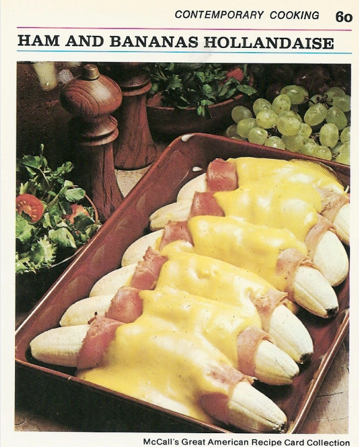

Cassic vintage american cuisine from the sixties
On this second recipe we shall try to recreate this recipe from the time our great grandma
This exotic recipe might not please all the guest around the table but will for sure leave a lasting impression of your apex tastes
Ingredients
- - medium bananas
- 1/4 cup lemon juice
- 6 thin slices boiled ham (about 250g)
- 3 tablespoon of mustard
- 2 envelopes of hollandaise sauce mix
- 1/4 cup of light cream
Return to homepage
Return to top